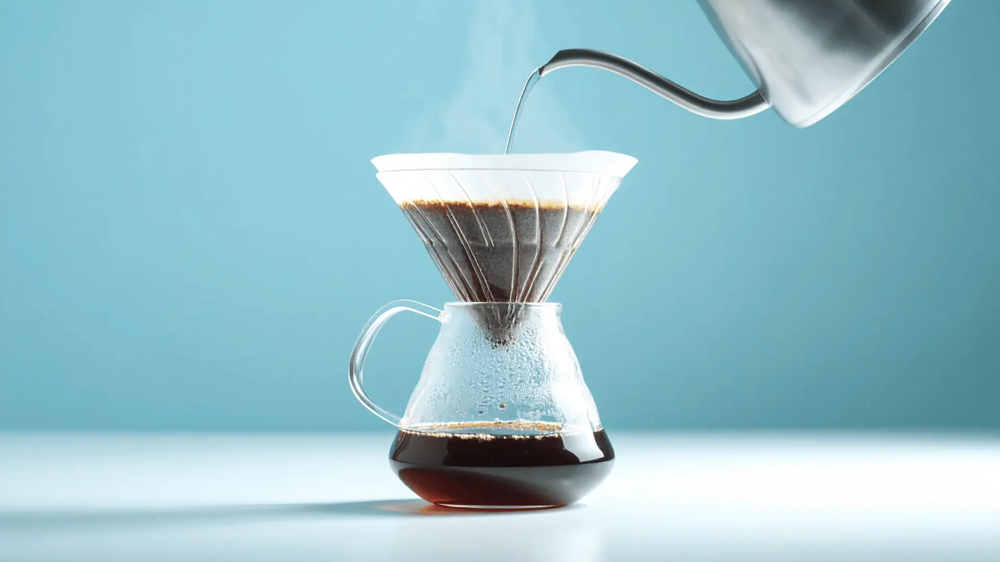
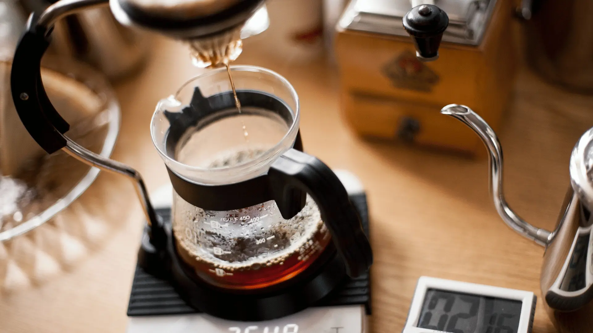
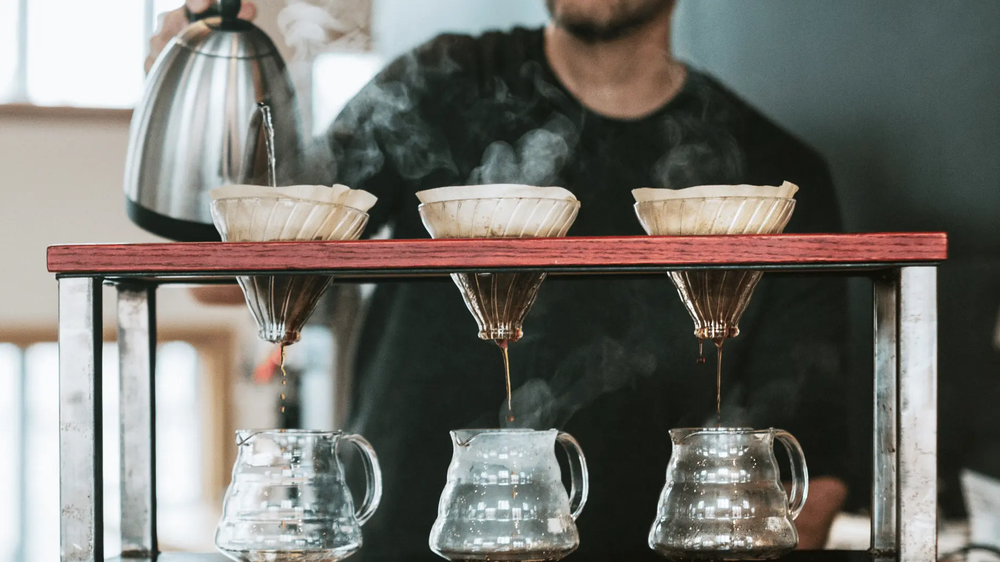

Brewly w praktyce
Estetyka i workflow, które motywują do parzenia
Wszystko w jednym miejscu — od świeżości ziaren po zapis smaku. Zadbaj o rytuał i baw się kawą.
Śledź świeżość bez notatek na kartkach
Widzisz od razu, w jakiej fazie jest kawa i kiedy smakuje najlepiej. Koniec zgadywania — prosto do idealnego okna parzenia.

Biblioteka kaw, która rośnie razem z Tobą
Zapamiętuj profile smakowe, notatki z parzeń i ulubione ustawienia. Z czasem zbudujesz własny atlas kawowy.

Asystent parzenia krok po kroku
Timer, proporcje i zapis wrażeń — wszystko działa w jednym rytmie. Idealne do V60, AeroPressu czy espresso.

Statystyki, które faktycznie coś mówią
Porównuj metody, oceniaj udane przepisy i odkrywaj swoje kawowe trendy. Mniej chaosu, więcej świadomych decyzji.
